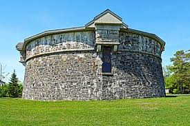

Hambantota Fort (Martello Tower)
 
The Martello Tower in Hambantota, is a small circular shaped fort,
inspired by the Martello tower (a 15th-century fort at Mortella (Myrtle)
Point in Corsica that survived an attack by the British Royal Navy in 1794).
The tower was built between 1804 and 1806 to protect the harbour and settlement at Hambantota,
following an unsuccessful attack by Kandyan insurgents in 1803.
Construction of the tower is credited to a Captain Goper of the Engineers Corp (however no individual by that name appears in the British Army records).
The commanding engineer in Ceylon at the time of the tower's construction was Captain Bridges,
who was involved in the design of a similar Martello tower in Simon's Town near Cape Town, South Africa in 1796,
which the tower in Hambantota closely resembles.
In September 1803 HMS Wilhelmina stopped briefly at Hambantota, where she dropped off an eight-man detachment from the Royal Artillery,
who reinforced the British garrison there and later helped it repel a Kandian attack.
The Martello tower is 7.6 m (25 ft), with a base diameter of 12 m (39 ft) and 1.2 m (3 ft 11 in) thick walls.
It has an unusual projecting rim around the parapet.
Similar to English towers the entrance to the fort was through a doorway on the first floor but unlike others the Hambantota tower has a number of loopholes.
The ground floor contained a storeroom and magazine. The tower's armaments included two 6-pounder-, three 3-pounder,
and a number of 2 and 1-pounder guns. In 1813 a 5+1⁄2-inch howitzer replaced most of the small guns, and in 1814 two 18-pounder guns were added.
The tower was restored in 1999.
In the past, the tower housed the Land Registry of the Hambantota Kachcheri.
Today it houses a fisheries museum.
 Location (Hambantota Fort - Martello Tower)
Location (Hambantota Fort - Martello Tower)